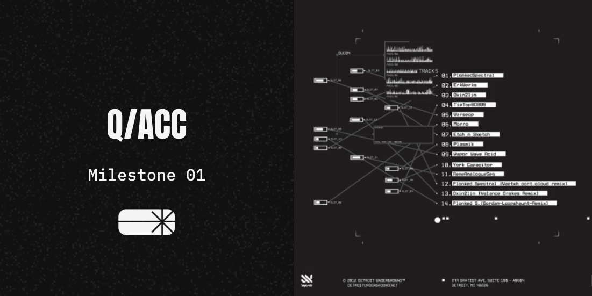
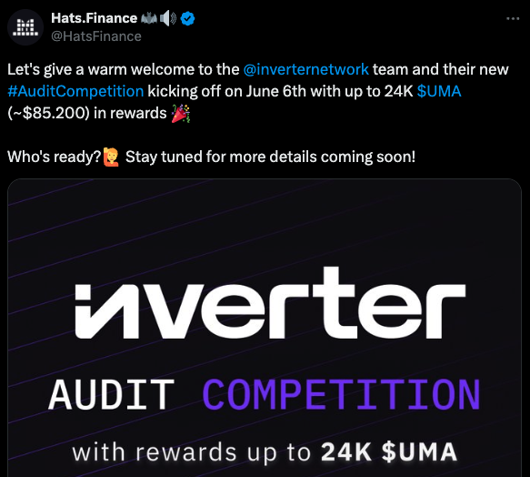

Q/ACC: MS1
Originally published at https://paragraph.com/@qacc/q-acc-ms1

The Quadratic Accelerator (q/acc) is a groundbreaking growth primitive poised to revolutionize the traditional Web3 grant landscape. Instead of the conventional approach of directly issuing grants to projects, q/acc redirects grant capital as collateral to an augmented bonding curve. This innovative process creates a new project token that not only grants holders access to projects but also empowers them with influence.
The protocol further enhances the excitement with quadratic funding style rounds, where donors are rewarded with project tokens. All token trades incur a small tax, which then becomes a perpetual revenue source for the project. The q/acc protocol is a game-changer, realigning chain, project, and community incentives in a way that was previously unimaginable. With the q/acc protocol:
-
Chains get native projects, eliminate dumping, and boost TVL.
-
Projects get a perpetual funding source.
-
Communities get ownership and participation in new projects.
After much discussion and deliberation, Polygon Labs has given Giveth a grant to build and launch the q/acc protocol on zkEVM. As a part of this grant agreement, three key milestones are required to unlock the full grant and bring q/acc to production. After several weeks of building, we are happy to announce the completion of the first milestone.
Module Specification
The q/acc protocol builds on and extends the Inverter Protocols parameterized bonding curve stack capabilities. By doing so, q/acc leverages its existing library of over a dozen modules and adds the specific capabilities required to complete the mechanism contracts end-to-end. This cuts down on audit costs and ensures maximum module composability. Below is an abbreviated list of q/acc-specific parameterizations and modules:
-
Hatched Token Minting
-
BC Activation & Deactivation
-
Conditioned BC participation
-
Conditioned BC token release
-
Redemption set specification
-
Funding pot liquidity caps
-
BC compatible Arbitrage Bot
Combined with the other commissioned Inverter customizations, the module specification for q/acc is complete, and the team retains the flexibility to make parameter changes based on learnings gleaned from successive cohorts.

Expanding Module Library
Code Complete
The development of all required q/acc modules and capabilities is complete, and the code freeze will be entered on June 4th. The first round of audits has begun, and no blocking issues are indicated. Macro is conducting the audit and has a client list that includes prominent projects like Maker and Farcaster. In addition to the macro audit, an audit competition with a $85k pot will be held on Hats Finance next week.

The q/acc contract code and the rest of Inverter's other modules can be viewed in the GitHub repository here, and branch activity can be quickly referenced here.
Teaser Announcement
Giveth and the q/acc team have opted to build in the open to drive awareness and community anticipation instead of making one large announcement upon launch. To this end, Giveth announced a teaser of the q/acc program and an interest form. The teaser thread had fantastic reach, generating hundreds of likes and retweets, all organic and from mature Web3 natives, and nearly 50 submissions were submitted to the interest form.
Giveth founder Griff released a dedicated podcast with Kevin Owocki immediately following the announcement, in which he discussed the details of the q/acc mechanism. A teaser of that show can be viewed here. This is merely the inkling of the beginnings of q/acc mindshare. Materials further describing the mechanism and value prop of q/acc will be made available to key Polygon stakeholders like BD and Defi so they can use the protocol to augment their strategic offerings and goals.
Next Steps
The team's next milestones include completing the audit, the SDK, and deploying contracts to test net. Concurrently, the team will increase education and awareness about the program and the number and quality of interested projects. Numerous program requirements not explicitly referenced in our milestones are being undertaken daily. One singular goal remains the focus: drive the highest quality tokenized projects to zkEVM. No other program has had such an innovation, and no one will except Polygon. Everyone from the growing list of communities helping to bring q/acc to life is counting down to season two of the Polygon grants program. Together, we will forever change the story of Web3 growth and sustainability.
A very special shoutout and thanks to the communities making this possible:
-
Polygon
-
Giveth
-
Inverter Protocol
-
CommonsStack
-
General Magic
Originally published on Quadratic Accelerator